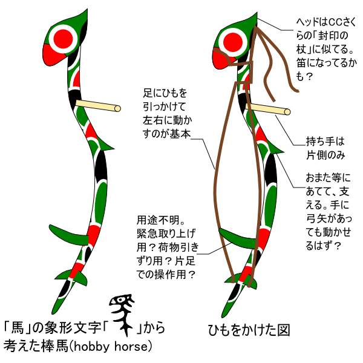
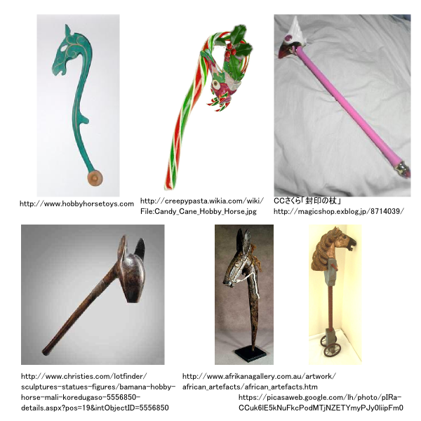
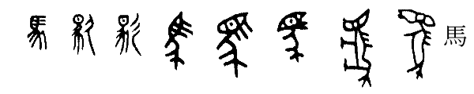
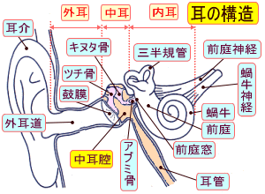

漢字の「馬」の象形文字はむしろ「棒馬(hobby horse)」では？

漢字のもと、金文などに見られる「馬」の象形文字はとても「目」が大きい。書き方でわかりにくいが、よく見ると確かに今の「馬」にも「目」は含まれている。これがあの生きている馬を上か横から図示したものとはとても思えない。むしろ私にはおもちゃの馬すなわち「棒馬(hobby horse)」に見える。 今年、私はカレンダーに『白川静 漢字歴 2012 週めくり』を使っているが、今週(9月17日から23日)の漢字が「<ruby><rb>驫</rb><rt>ひょう</rt></ruby>」になっていて、そこで「馬」の金文が三つ並んだものが書かれている。(なお、上の絵の中の「馬」の象形文字は、この一つから撮った。) この「目」、白川静流の呪術的解釈をすれば監視する目、世の真理を徹して見る目といったところになるのだろうが、なぜそれが「馬」に付くのが自然とされたのだろう？ [aboutme:118797] などでチラと書いたが、ギリシャ神話には、ポセイドンがデメテルに馬を贈ったという話がある。つまり古代人が「馬」と認識する動物は、古代において「新しい動物」という感覚が広くあったのではないか。 それは中国も同じで、馬のような動物はいたかもしれないが、今我々が見るような馬でなかった、または、直に乗って便利なものとは思われてなかったのではないか。そして、一般に動物を操作することを模式化した「棒馬」が先にあり、まるで「棒馬」のように操作できる動物ということで、それを生きている馬の字として充てたというのが金文の時代の認識なのではなかろうか？(まるで想像上の「麒麟」になぜか生きているキリンを措定したように。) そう考えると金文の大きな「目」は、操作によって見えることをむしろ示していて、現代のオカルトでいう「ダウジング」のようなことに棒馬を使ったのではないか。 先のカレンダーの前週の「馮」または「憑」、古代に「憑依」という意味で使った文字である。棒馬は子供の遊具でもあっただろうが、それがまるで動物霊を器具に宿して使うかのような体裁にはなるわけで、人形とは少し違った宗教観を生み、何がしかの役割を担うものと古代に認識されていたのではないか。 そんな風に考えながら、想像していったのが上の絵のようなホビーホース。思うようなものがないか Google の画像検索等で調べたがなかった。曲線的なホビーホースは海外のサイトで一つ見つかったぐらい。ステッキでも検索していて杖頭はアニメ『カードキャプターさくら』の「封印の杖」のイメージが近いとは思った。 いちおう描いてみた。ケバケバしい模様はアフリカ土産かインディアン土産などで見た<ruby><rb>柄</rb><rt>がら</rt></ruby>の記憶を参考にした。日本にもこういう柄があったと思うが、私には知識がなくって名称がわからない。 この絵の著作権は…なんてことを気にするほどのものではないと思うが…『易双六』のカードと同じ扱いで、つまり、私が描いたのをネットで使うのは自由だけど、そのモノを作って売るとなったら、私こと JRF の許可を得てくださいといったところ。 ■関連
●《File:Candy Cane Hobby Horse.jpg - Creepypasta Wiki》。画像検索してて、特に色使いがイメージピッタリなのがこれだった。これも含め、↑に画像検索で見つけたアンティーク風な棒馬(っぽいもの)の写真を「引用」しておいた。 ●《おんまはみんな : 安敦誌》。ウマという訓読みは中国語のマという音読みから来ているという説。カレンダーと並んでこの記事を読んだのが「馬」に関心を持つキッカケとなった。私のこの記事のカテゴリに「日本語論」を含めているが、そこの他のエントリにもあるように「漢語論」的になってる。ただ、そういうのも含めて「日本語論」なんだというのは、まぁ、常識だと思う。 ■追記 (2012-09-23) 上で「棒馬が先にあり、まるで棒馬のように操作できる動物ということで、それを生きている馬の字として充てたというのが金文の時代の認識」と書いた。下図のように実際の象形文字の移り変わりを見ると、むしろ金文の前の時代は動物らしい体をしているが、その顔が確実に「目」と認識されるあたりで、棒馬への概念の変化があったのではないか。
(上図は 『文字逍遙』(白川 静 著, 平凡社ライブラリー 46, 1994年) より引用。) ただ、他の象形文字と同じく「馬」はただの動物ではなく何らかの神獣という認識が、神獣を象徴する器具(棒馬)となり、その象徴に逆に実在の動物を充てはめた…というのが、私の説ということになる。 が、この図を見ると、カレンダーから取ったのに近い「馬」の字は二つあるが、これらは棒馬よりも動物(神獣)に近い雰囲気を持っている。むしろ、それ以降の現代の篆書に近くなるまでのすべてのもののほうがむしろ棒馬のような器具に近い雰囲気が強いように思う。 そして、その器具としては時代劇などで見る、火消しの<ruby><rb>纏</rb><rt>まとい</rt></ruby>を思わせる。《纏 - Wikipedia》を見ると次のようにある。 ＞ 纏(まとい)とは、江戸時代に町火消が用いた、自分たちの組であることを示すもの。纏は各組により様々な意匠が凝らしてある。概ね、上部に組を表す頭があり、馬簾と呼ばれる房飾りがついている。下部は木の棒になっていて手に持って使う。 ＜ 案外、纏が「棒馬」の<ruby><rb>熟</rb><rt>な</rt></ruby>れの果てみたいなものなのか？ なぜ火消しには纏が残ったのか？火消しと言えば、はしごを上って芸をする出初め式。戦場の<ruby><rb>幟</rb><rt>のぼり</rt></ruby>が遠くからも見える旗印なのに対し、纏は煙をよけつつ<ruby><rb>階架</rb><rt>かいか</rt></ruby>の上にある人に見せる印だろう。 現代で、纏に近いものというと、赤ちゃんの天井に付けるシャンデリアふうのおもちゃ(「シャンメリー」だっけ？)が思い浮かぶ。これとやはりおもちゃたる「棒馬」を結ぶところが、何か人の根元的感覚に通じているのかもしれない。天にあるものが自らのあつかうものとなり、やがてただの棒状のモノとなる…といった感覚。色覚などの目の認識の発育過程の脳の秘密のようなもの。 それらのところから思案すると、馬とは人の平衡感覚に関する何かなのではないか？「上にある人に見せる印」というのを「上の位の人に自らの下の者を使う能力を見せること」と考えれば、やはり「平衡感覚」…社会的な平衡感覚というようにも考えうる。 すると、案外、「馬」とはすなわち「蝸牛」「三半規官」といった、人の内耳・中耳の感覚器官の形象でそもそもあるのではないか。そもそもの象形文字からして、目につながる中国医学的臓器という認識から辿りついたものなのではないか。(このあたり、象神ガネーシャのフィギュアについての記事や私が経験した精神薬のメニエール病のような副作用を参考にしたフィギュア写真 を思い出す。)
(上図は、《メニエール病｜身体の病気 - 健康・医療館》 より gif を pngに変換して引用。) …まぁ、勢いで書いてみたものの、『文字逍遙』を見てると、「纏」や「シャンメリー」には 162 ページにある「顕」の旧字の扁のほうが似ている。ちょっとこじつけすぎたか、と反省。 金文期も「馬」は「目」を「豕」に付けた構成、「象」は長い鼻と耳に「豕」を付けた構成と考えるだけのほうが素直ではある。ただ、「中国医学的臓器」という表現には、東洋では(自分が猿に似ていることを痛いほど認識してたからかどうかは知らないが、)人が動物から進化したものであるという認識が自然にあり、発生学的知識というか直観と結び付けて、獣は人にもある臓器の発生をより顕らかに伸長させた姿であり、そして同時にその獣はそういった姿を目指した感覚に特化した臓器として自らの中にも同定できる…といった考えを私はこめた。 そして、その進化・発生を象徴化すれば、その象徴は人の使う道具としても自然に現れるのかもしれない。獣たる臓器が「人」を使うように、人が使うことで世界を知っていく何かというのは、形象を構成しうるのかもしれない。 『文字逍遙』など漢字の始原を探る本を読んでると、字や書、象形文字を保つその宗教性がなぜか私はそういう世界観に自然につながるように思う。ミクロコスモス・マクロコスモスとかとは似て非なる、もっと血みどろな連関があるように思う。それはどちらかと言えば、私が信じるところなんだろうけど。 更新：2012-09-17,2012-09-23 初公開：2012年09月17日 18:51:25 最新版：2012年09月26日 00:18:02 Comments: Moving into Minnesota your winter seasons current challenging not just to stay comfortable bailey button ugg boots discount sundance ii ugg boots discount jkd qfp however look fashionable doing it. Once i noticed these kinds of Ugg boot on discount sales on oggboots.com We dived for the offer. Adore all of them!My spouse and i obtained a pair of these Ugg boot and also am unhappy. These were nothing can beat our previous Ugg boots. They look along with really feel inexpensive. My spouse and i sent it and phrboots.com quickly credited my own plastic card i bought another thing. Enjoy oggboots.com! They may be awesome. I had been a bit hesitant about it color as it seems richer of computer classic argyle knit ugg boots outlet mini bailey button ugg boots outlet tuz wbg looks when I got these people today My spouse and i chop down for each other along with had been thrilled to increase these to my personal Ugg sheepskin boots assortment! I am a lover associated with short cuff ugg boots clearance ultra tall ugg boots clearance njs Uggs and possess been recently because our first pair inside 2005, on the other hand don't like what sort of new ones fit. I adored my vintage bermuda back 2005, nevertheless have rarely put on the new ones I acquired inside the same style last year. They are way too small round the ankle and narrow as compared to my personal genuine ones. The brand new start furthermore just isn't as versatile because the outdated pair is and tough to tuck my own jeans included. I doubt I could break these people in much either. My mother just received a pair of the particular Bailey Links and that i might repeat the exact same for those. Too narrow round the foot. I'm annoyed I didnrrrt get one of these size-up when I had the opportunity. I probably wouldn't purchase the measurement down without attempting the standard dimensions first. Just received my Ugg boots today...as well as incredible, what can I believe that, other than they are wonderful? My spouse and i was not expecting excessive because My partner and i have a couple of EMU boot styles. Some believe there is much of a difference between all of them, until finally I received my Ugg boots. The actual Ugg boot, We sensed, acquired a lot more safety net and the sheepskin had not been since tough because my EMUs. The trunk isn't as weighty while my EMUs sometimes. Maybe it's due to different feet? In either case, I'm very pleased with my own buy. I enjoy Ugg boot! I have a couple of twos regarding Classic Brief in african american and also chestnut. I put on 8M within actually footwear My spouse and i own besides Ugg boot. I've tons of shoes or boots (however by no means enough). Dimensions Several is perfect after a couple of hours of damage. I've one particular set of dimension 7 and they are generally far too big and also loser s all around on my base. We don individuals at home only. I used to be past due for the UGG, yet I am just happy My spouse and i came up. They are amazing! Of course Ugg boot usually are not the prettiest sneaker, but young man they're secure, cozy, along with toasty. My hubby would rather ask wherever I keep your glaciers block My spouse and i apply my personal feet on during the cold months. I recently cannot keep them cozy inside, as well as out. Ugg boots do just fine even though! And as often, dellboots is completely wonderful! I just acquired these boots to include in our Ugg boot series. I've many different pairs in different styles and colors. I became really let down while using company's brand-new shoes or boots Ugg boot is generating. Your base from the footwear wouldn't remain upward and also ended up being extremely skinny. The actual diploma liner wasn't identical in the boots possibly, and one had been much slimmer compared to the various other. Furthermore, the boots had been way too free and that i thought my feet slipping out of them the whole thing. This isn't down to www.oggboots.com, but the idea that Ugg boot seems to be creating reduced quality shoes or boots is incredibly disappointing. I desired the particular chestnut coloration, nevertheless they experience quickly and cheaply manufactured. Furthermore, i feel as if my personal foot would certainly proceed all the way through the very best after a few wears. I just received the particular dark chocolate shade for xmas and they also really feel just perfect! I'm like the proverb types are not made similar to they will had been. I will be coming back all of them and also desire which Uggs will start producing their chestnut Ugg boots with better made yet again soon ahead of I buy one more set. Enjoy for the reason that! I have had the actual Basic Extra tall before and they also got too cozy at times, but these are perfect! Which i use a Seven.5M in other footwear. I could a 6 over these however they ended up thus limited they will damage and also experienced just like my own feet has been dropping off to sleep. What's more, it felt such as my personal toes and fingers ended up scrunched. Your Several thinks more leisurely, comfortable and excellent! I wouldn't recommend dimension down One.Your five sizes if you do not never mind you getting crowded. 投稿: wetuggbihl | 2012-09-18 17:50:59 (JST) [E:ribbon] 更新：「画像検索で見つけたアンティーク風な棒馬の写真」を「引用」した。Candy で作った色のイメージがピッタリなやつは、角度が小さいが何げに曲がり方もイメージに近い。 投稿: JRF | 2012-09-20 23:26:47 (JST) [E:apple] 更新：「追記」部分を書く。またつまらぬ「妄想」を書いてしまった。 投稿: JRF | 2012-09-23 05:03:14 (JST) [E:diamond] 平凡社『中国の故事と名言 500選』を読んだ。その本の「竹馬の好[よしみ]」の項に次のような記述があった。 ＞(…この故事にいう…)竹馬とはそれぞれ適宜の高さに足懸りをつけた二本の竹竿に乗って遊ぶ今日の竹馬ではない。日本でも古く「春駒」と呼ばれた子供の遊び道具で、先端の方に馬のたてがみに擬したふさをつけた竹の棒にまたがり、一方の先を地面につけて走りまわるものである。これが中国でいつ頃から行なわれるようになったものかは定かでないが、たとえば、『後漢書』(…)には(…)とある。＜ 私は、「棒馬」のことを「春駒」と呼ぶのは知らなかった。 投稿: JRF | 2015-11-07 18:20:32 (JST) Links: 白川静 漢字歴 2012 週めくり: http://www.amazon.co.jp/dp/4582645526 海外のサイトで一つ見つかった: http://www.hobbyhorsetoys.com/index.html カードキャプターさくら: http://www.clamp-net.com/works/ccsakura 易双六: http://jrf.cocolog-nifty.com/archive/youscout/index.html File:Candy Cane Hobby Horse.jpg - Creepypasta Wiki: http://creepypasta.wikia.com/wiki/File:Candy_Cane_Hobby_Horse.jpg おんまはみんな : 安敦誌: http://antonin.exblog.jp/18981548/ 文字逍遙: http://www.amazon.co.jp/dp/4582760465 纏 - Wikipedia: http://ja.wikipedia.org/wiki/%E7%BA%8F 象神ガネーシャのフィギュアについての記事: http://jrf.cocolog-nifty.com/column/2006/07/post_1.html 私が経験した精神薬のメニエール病のような副作用を参考にしたフィギュア写真: http://jrf.cocolog-nifty.com/column/2007/02/post.html メニエール病｜身体の病気 - 健康・医療館: http://health.merrymall.net/cb10_21.html wetuggbihl : http://www.labboots.com/rss_feed/feed/products/grey-mini-bailey-button-uggs-boots-p-234 平凡社『中国の故事と名言 500選』: http://www.amazon.co.jp/dp/B000J942Q0